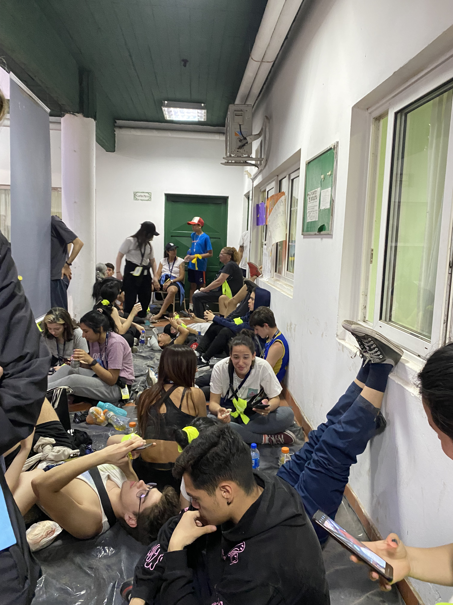
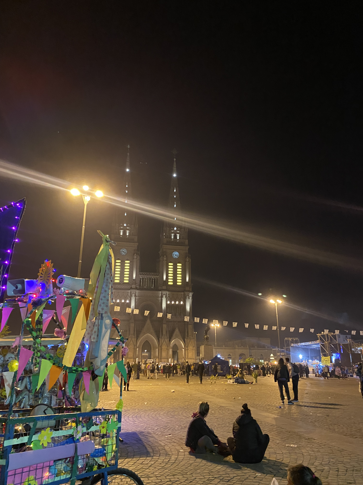

Peregrinación a Lujan
Experiencia de la Peregrinación a Luján
Por Tadeo Contreras de 2°A
Opinión personal: fue una experiencia re linda, de las mejores con el colegio porque se vio
reflejada la hermosa comunidad que tiene el CEAES. Fue la 1era vez que fui a la peregrinación
y la sensación de satisfacción de llegar a Luján no se puede describir. Conocí gente muy especial y
no puedo esperar para la edición del año que viene.
Camino a Luján: A las 8:30 nos reunimos en el colegio y nos dieron las instrucciones y un kit de peregrino
con un mapa del trayecto, un rosario, una cintita para identificarnos y un colgante con nuestro nombre y apellido. Estuvimos
una hora más o menos con los preparativos y después salimos hacia Liniers, pero antes de eso Ricardo Barboza dio un
discurso. En el micro nos dieron la primera vianda. A las 10:40 nos bajamos del micro y empezamos oficialmente la
peregrinación.
Durante todo el trayecto fueron pasando música. En el 1er tramo Adriana Perillo contó la historia sobre el
carrito de la peregrinación. A las 13 horas llegamos a Morón, ahí nos dieron el refuerzo de la vianda. Descansamos 30-40 min y
después empezamos el 2do tramo y me tocó llevar el carrito junto con Sebastián Aquino de 1 ro A. La 2da parada fue en Merlo. Ahí
también nos dieron un refuerzo de comida y los del grupo de apoyo atendieron a las personas que lo necesitaban. El 3er tramo fue de
Merlo a La Reja. Fue el que se me hizo más largo. Llegamos a las 7:30 cantando "Eduardo vení a buscar al Espíritu". Ahí nos dieron
panchos (estaban riquísimos). En esta parada algunos se quedaron, otros pidieron que los atendieran y otros que les hagan masajes
(Gastón Menestrina se encargó de eso). El 4to tramo fue de La Reja a Rodríguez. Fue uno de los que más me desgastó. En este tramo
Máximo y Mayra (Marley y Lali) fueron preguntándoles a los peregrinos como se sentían en esta peregrinación y porque decidieron
participar. Cuando llegamos nos recibieron con la cena (panchos y un plato de arroz). En esta parada la mayoría se quedó. Yo estuve a
punto de abandonar porque no estaba del todo bien, pero quise seguir. Antes de seguir caminando nos dieron unos chocolates. En este
último tramo también llevé el carrito y fui el encargado de pasar música. Fue de 5 horas este tramo con una parada en El Puente. Ahí
paramos para ir al baño, comer algo rápido y seguir. En esta última parte Rocío Noya y Adriana Perillo hicieron preguntas con la modalidad
de los 8 escalones, y la gente que iba caminando alrededor nuestro se copó. A las 4:30 de la mañana aproximadamente llegamos a la Basílica
de Luján con la canción "We are the champions". Cuando llegamos descansamos y nos dieron chocolates y medialunas acompañado de una bebida
calentita. Después nos subimos a los micros y volvimos al colegio. Llegamos a las 6 y media. Ahí bajamos todos, nos despedimos y concluyó
la Peregrinación 2022 del CEAES.



